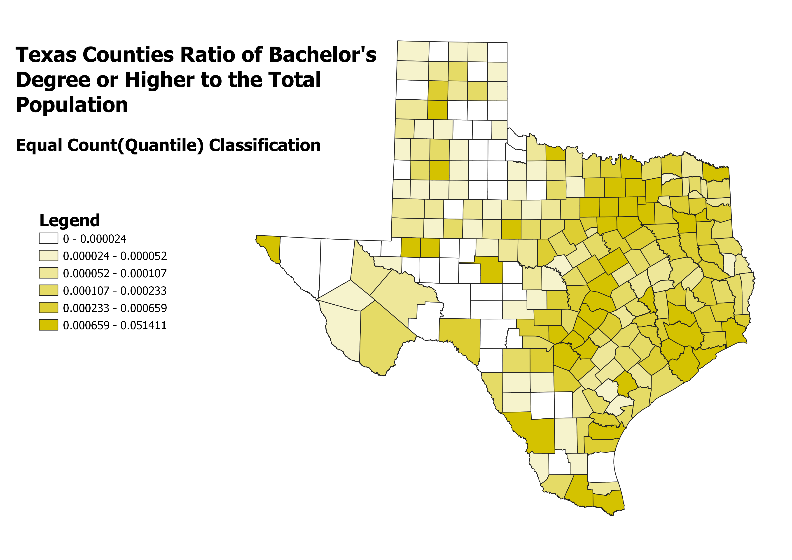
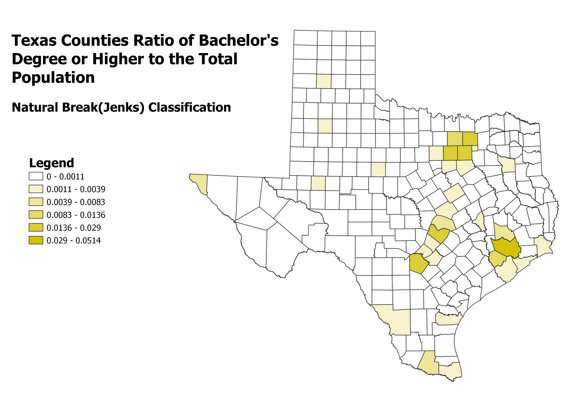
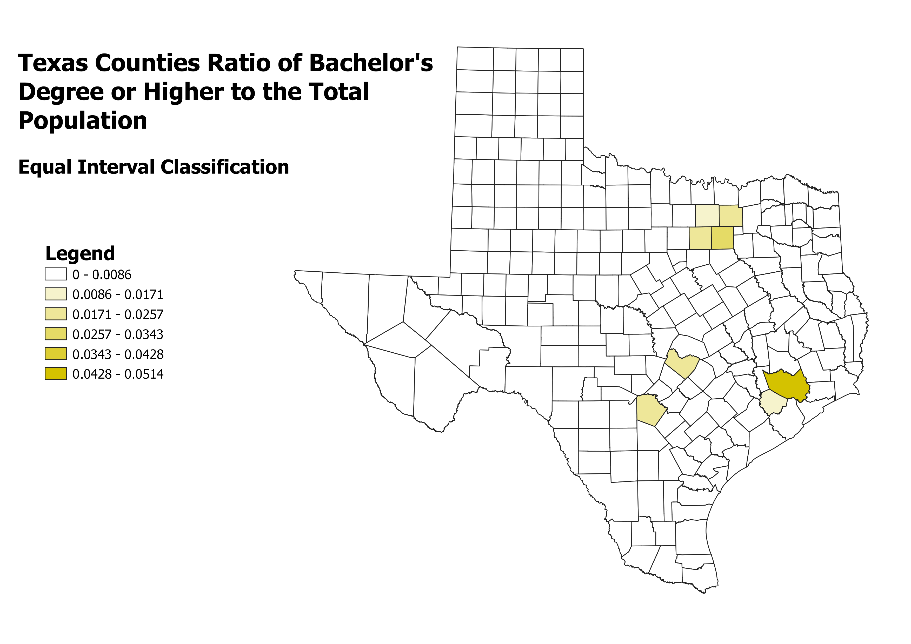

Due to accidentally using North Carolina in the last part, I had to switch and used Educational Attainment for those over 25 in the state of Texas.
I used the ratio of those who obtained a bachelors degree or higher and is over the age of 25 compared to the population estimate that is over 25 in the state of Texas. This would show where the most people in the state with college degrees are comparatively to the rest of the state.
Pros of this allow for distortion to be minimized by increasing the number of classes, so it would potentially look prettier as the colors would slightly get darker and darker. However, a con is that it can be misleading due to features with widely different values potentially in the same class.
Natural Breaks makes the breaks where the differences are maximized between classes. This however is meant to be used with less than seven classes when using monochromatic shading, so there can not be more than 7 distributions.
Equal interval is great when it is applied to things like percentages and temperature. However, when it is dealing with things that vary widely, it might be best to utilize another method as there might be a lot of distortion.
